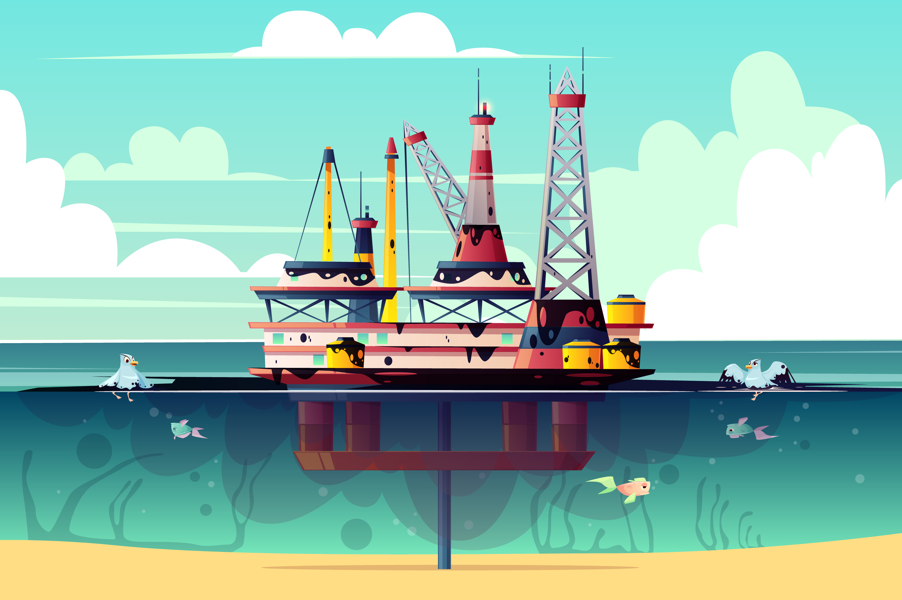
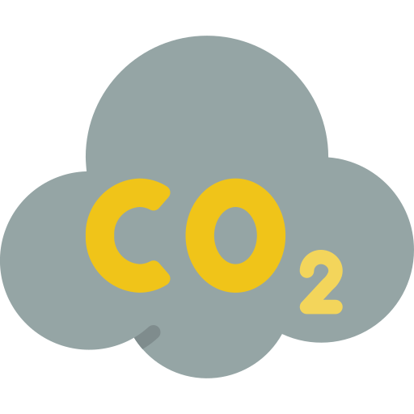

Energias não renováveis:

A energia não renovável (ou energia suja) são aquelas produzidas a partir de fontes de energia
que
se esgotam na natureza e, portanto,causam diversos impactos ambientais. Essa energia de
origem orgânica
é limitada, e demora milhares de anos para serem recompostas no meio ambiente.
Alguns exemplos de
energias não renováveis são: Carvão, Petróleo dentre outros. Apesar do baixo
custo de mercado, a alta
demanda
desses combustíveis, gera muitos problemas ambientais no
Planeta Terra.
consequências:

poluição do ar
A alta emissão de Dióxido de Carbono na Atmosfera provoca a poluição do Ar que respiramos.
poluição dos mares
Muito utilizado em veículos de locomoção, o petróleo é um grande causador da poluição dos
mares.

efeito estufa
A alta emissão de gases poluentes, provoca o aumento de temperatura no Planeta Terra.
Energias renováveis
A Energia renovável ou energia limpa são nomes possíveis para qualquer energia obtida
por meio de fontes renováveis, por exemplo: Energia Solar e Energia Eólica. Consumir
energia 100% renovavél é o
melhor jeito de compensar as emissões de CO2. Ainda que
o todo o mundo atualmente usa da maior parte das
suas fontes de energia o Carvão,
os investimentos e tecnologias em energia renovável estão crescendo
cada vez mais.
Cerca de 90% das novas energias geradas no ano de 2015, por exemplo, vêm de fontes
renováveis.Aquele foi o ano da energia renovável; o investimento foi de US$ 286 bilhões
principalmente
em energia solar biocombustíveis e eólica.
benefícios:
ajuda no combate do aquecimento global
O uso de fontes renovavéis reduz drasticamente a emissão de gases poluentes na atmosfera

é uma fonte inesgotavél de energia
Por não depender de recursos fosséis da Terra como fonte de energia, não corre o risco de esgotar
impacto na natureza bem menor
O impacto no meio ambiente usando fontes renováveis de energia é bem menor.